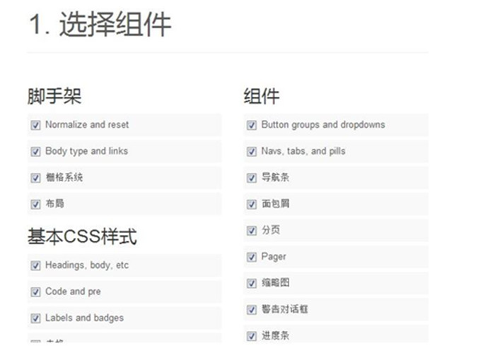

Bootstrap 是由 Twitter 公司的两名技术工程师研发的一个基于HTML、CSS、JavaScript 的开源框架。该框架代码简洁、视觉优美，可用于快速、简单地构建基于 PC 及移动端设备的 Web 页面需求。Bootstrap在jQuery的基础上进行了更为个性化和人性化的完善，形成一套自己独有的网站风格，并兼容大部分jQuery插件 它最为重要的部分就是它的响应式布局，通过这种布局可以兼容 PC 端、PAD以及手机移动端的页面访问。。
Bootstrap的特点
Bootstrap为所有开发者、所有应用场景而设计的，它让前端开发更快速、简单。所有开发者都能快速上手、所有设备都可以适配、所有项目都适用。
预处理脚本
虽然可以直接使用 Bootstrap 提供的 CSS 样式表，不要忘记 Bootstrap 的源码是基于最流行的 CSS 预处理脚本 - Less 和 Sass 开发的。你可以采用预编译的 CSS 文件快速开发，也可以从源码定制自己需要的样式。

一个框架、多种设备
你的网站和应用能在 Bootstrap 的帮助下通过同一份代码快速、有效适配手机、平板、PC 设备，这一切都是 CSS 媒体查询（Media Query）的功劳。

特性齐全
Bootstrap 提供了全面、美观的文档。你能在这里找到关于 HTML 元素、HTML 和 CSS 组件、jQuery 插件方面的所有详细文档。
Bootstrap基础知识
-
-
Bootstrap的结构
2016.7.7需要在官网将Boostrap下载到本地，解压之后发现
Boostrap的结构如下:

主要分为三大核心目录：css(样式)、js(脚本)、
fonts(字体)。
1.css目录中有四个css后缀的文件，其中包含min字样的，
是压缩版本，一般使用这个；不包含的属于没有压缩的，
可以学习了解 css 代码的文件；而 map 后缀的文件则是
css 源码映射表，在一些特定的浏览器工具中使用。
2.js 目录包含两个文件，是未压缩和压缩的 js 文件。
3.fonts 目录包含了不同后缀的字体文件。
-
Bootstrap的代码框架
2016.7.8我们来示范创建一个 HTML5 的页面，并且将 Bootstrap
的核心文件引入，然后测试是否正常显示

上述3个meta标签*必须*放在最前面，任何其他内容
都*必须*跟随其后
接下来写入title以及link的各个文件

最后写入代码主体部分，同时要加入所需要加载的JS包

Bootstrap常用组件
2016.7.6 （1）：bootstrap提供了二百多个图标,可通过span标签
来用这些图标
（2）：标签用于创建按钮，bootstrap提供了
丰富的按钮样式
（3）:还包括下拉菜单、输入框、警告框、导航栏的组件。